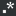

smzc
Settings | 192.168 Code Review
业务运营系统
问题 - 神马供应链服务端 - Redmine
神马专车-余川 -[蓝湖]
我的地盘 - 禅道
Dashboard [Jenkins]
smzc online wiki
github
myNgHelp
ngApi
ngDoc
StackBlitz
TLCL
gitbook
@alias | JSDoc 介绍
Angular Tutorials
gitbook-v2
gitbook-v1
全端開發人員天梯
ng
Angular University
ngx-weui
Angular
UI-Router
AngularJS — Superheroic JavaScript MVW Framework
Angular directives for Bootstrap
Angular Material
PrimeNG
Ant Design of Angular - NG-ZORRO
rxjs
NgRx
Rxjs6
RxViz - Animated playground for Rx Observables
前言 · 学习 RxJS 操作符
RxMarbles: Interactive diagrams of Rx Observables
miniprogram
微信小程序接入指南 · 小程序
WeUI
git
521xueweihan/git-tips: Git的奇技淫巧
Learn Git Branching
tool
HTML Minifier
DevDocs API Documentation
SassMeister
TinyPNG – Compress PNG images while preserving transparency
Rufus - 轻松创建USB启动盘
Google 翻译
Markdown Tutorial
Autoprefixer CSS online
UnCSS在线！
枫叶主机客户中心
npm
远程调试 WebView
css2sass
Babel · The compiler for writing next generation JavaScript
Node.js
Minify - JavaScript and CSS minifier
RegExr: Learn, Build, & Test RegEx
Playground · TypeScript
Online JavaScript beautifier
百度脑图 - 便捷的思维工具
lib
Bootstrap
Zepto.js: the aerogel-weight jQuery-compatible JavaScript library
Animate.css
Pure
Magic Animations CSS3
sass文档
Progress.js - Themeable progress bar library
jQuery
Swiper - Most Modern Mobile Touch Slider
ECMAScript 6 入门
Lodash Documentation
gauge.js
iScroll 5, smooth scrolling for the web
other
SegmentFault 思否
看完离编写高性能的JavaScript又近了一步 - Div.IO
Iconfont-阿里巴巴矢量图标库
百度地图JSAPI 2.0类参考
How2J 的 Java教程
慕课网-程序员的梦工厂
地图API示例
Stack Overflow - Where Developers Learn, Share, & Build Careers
第 9 屆 IT 邦幫忙鐵人賽
Your_first_suite
正则表达式手册
Java平台标准版8文档
class:series